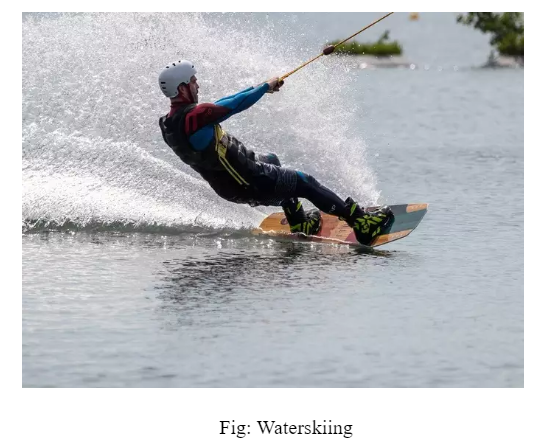
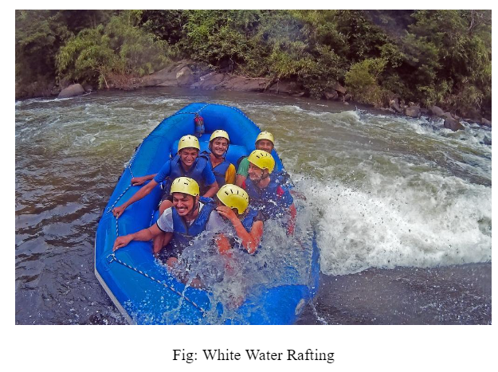
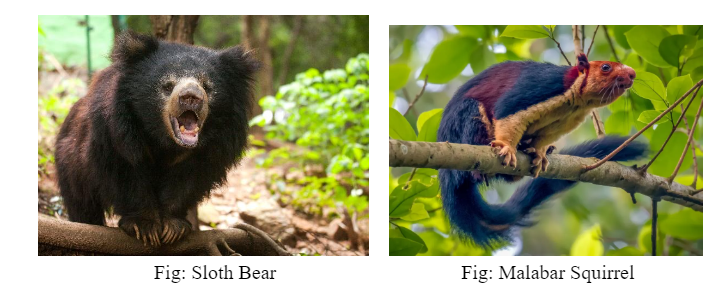

The travelers can live up some of the popular adventure recreational activities to the fullest such as waterskiing, white water rafting, windsurfing, kayaking, and others.

In a huge boost for the pandemic-hit tourist sector, the government has allowed kayaking at Gokak Falls in Belgavi district. The falls is a major tourist destination during the monsoon season and the kayaking initiative is likely to draw more visitors, especially water sport enthusiasts.
After the forest and other government departments cleared the project, Explore The Outdoors, a private venture owned by Ayub Khan launched the kayaking service. More than 400 people have taken kayaking trips since, besides learning about paddling and navigation.
Currently, five kayaks, a jetski and a raft are available for hire. A 30-minute ride on the Ghataprabha river costs Rs 300 per person. Visitors are taught the basics of kayaking — for example paddling and how to ensure one’s balance while seated — prior to the ride.


Travellers can visit Belgaum for more recreational activities. Belgaum is just around 70 km from Gokak.
The gorgeous landscape of Belgaum is endowed with gurgling streams, majestic waterfalls, verdant hillocks and narrow winding forest lanes, making it the perfect place for trekkers and hikers. One of the best trekking routes in Belgaum is the trek to the Shimbola Waterfalls. The cascading falls provides an exciting trail of 10-12 km, and the trek can be accomplished within five hours. Another great option for trekking is Sada Village, wherein you get to explore a diverse landscape. During this trek, you can stop at an ancient fort built by the rulers of the Kadamba dynasty (345-525 CE), relax at a gorgeous waterfall surrounded by dense forests and crawl through volcanic caves or try your luck at spotting the mysterious Mother Mary Rock. Tourists can also opt for the remarkable trek to Kalsa and Sural valleys, wherein they will get an opportunity to stroll through the wilderness in the Kankumbi forests. It usually takes around four hours to complete the trek, which involves navigating through boulders in the river and pushing against challenging steep ascends and descents. Belgaum is also famous for its jungle trekking trails, which can be taken on even by beginners. Experienced guides take tourists around the Dandeli jungles. If you are lucky, you can get a chance to spot wild animals like black panther, Malabar squirrel, sloth bear, barking deer, sambar, bison, iguana, cobra, elephant, and birds like the great Indian hornbill.